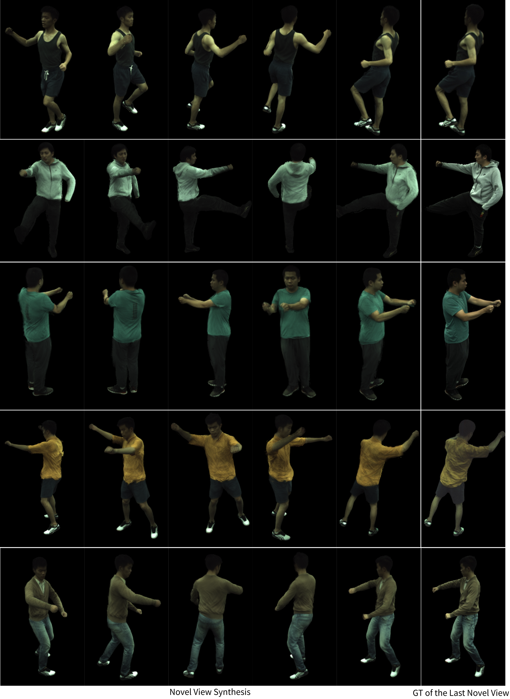

Novel View Synthesis
Additional qualitative results for novel view synthesis on ZJU-MoCap training poses.

Recent techniques on implicit geometry representation learning and neural rendering have shown promising results for 3D clothed human reconstruction from sparse video inputs. However, it is still challenging to reconstruct detailed surface geometry and even more difficult to synthesize photorealistic novel views with animatated human poses.
In this work, we introduce PGAHum, a prior-guided geometry and appearance learning framework for high-fidelity animatable human reconstruction. We thoroughly exploit 3D human priors in three key modules of PGAHum to achieve high-quality geometry reconstruction with intricate details and photorealistic view synthesis on unseen poses. First, a prior-based implicit geometry representation of 3D human, which contains a delta SDF predicted by a tri-plane network and a base SDF derived from the prior SMPL model, is proposed to model the surface details and the body shape in a disentangled manner. Second, we introduce a novel prior-guided sampling strategy that fully leverages the prior information of the human pose and body to sample the query points within or near the body surface. By avoiding unnecessary learning in the empty 3D space, the neural rendering can recover more appearance details. Last, we propose a novel iterative backward deformation strategy to progressively find the correspondence for the query point in observation space. A skinning weights prediction model is learned based on the prior provided by the SMPL model to achieve the iterative backward LBS deformation.Extensive quantitative and qualitative comparisons on various datasets are conducted and the results demonstrate the superiority of our framework. Ablation studies also verify the effectiveness of each scheme for geometry and appearance learning.
Additional qualitative results for novel view synthesis on ZJU-MoCap training poses.
Additional qualitative results for novel pose synthesis on ZJU-MoCap unseen poses.
Additional geometry reconstruction on ZJU-MoCap datasets.

Additional geometry reconstruction on PeopleSnapshot datasets.

@article{wang24pgahum,
author = {Hao Wang and Qingshan Xu and Hongyuan Chen and Rui Ma},
title = {PGAHum: Prior-Guided Geometry and Appearance Learning for High-Fidelity Animatable Human Reconstruction},
journal = {arXiv preprint arXiv:2404.04555},
year = {2024}
}